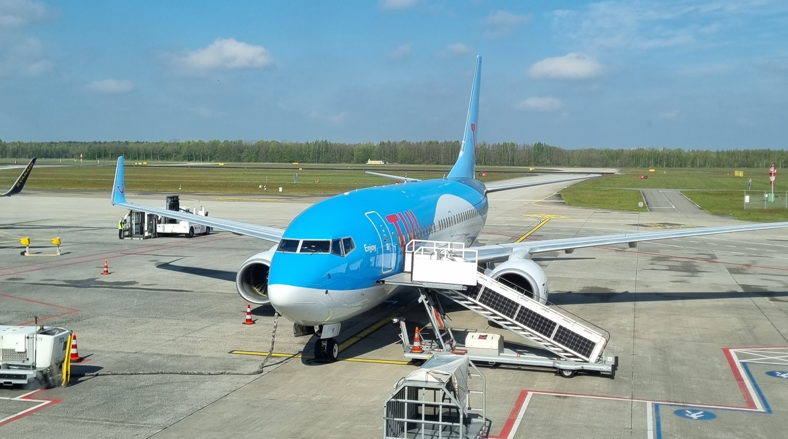
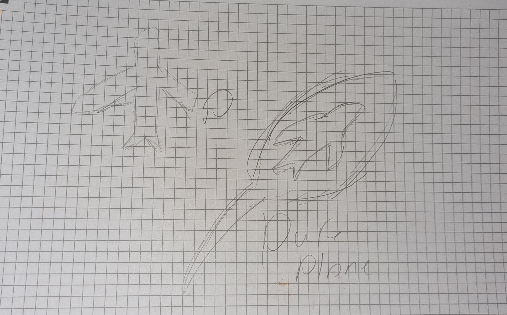
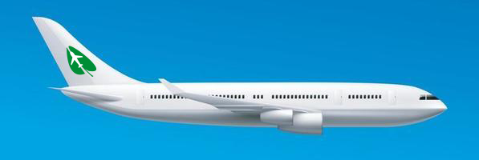

Principles of design
For the media production lessons we had to create a logo, i had a hard time coming up with something i wanted to make a logo for. But when i was talking about it with a collegue she jokingly said "Do it about a climate neutral airline" beceause Extincion Rebelion was coming to demonstrate later that week,
but i thought it was actually a pretty good idea!


Reseraxch into methodes - solo
At first i started with a design of a plane beceause i wanted the logo to be clear, even with a glance at the logo. Then i started thinking about how i wanted to show of that it is a nature friendly airline, i started searching for "eco friendly" businesses and their logo's. I saw trees and leafs were used often to represent "ecor frinedly"
And with some more insperation from internet i came up with this design (Image on the left)
Reserach into methodes - group
After playing around with illustrator a bit, i started wotking in the logo and it went kind of smooth. I had to figure out some things but it did not take that long. The result is not amazing but i think it is ok, espacially for the first time!
on the right you can see the mockup that i created with the logo, and you can download the logo here (in SVG format)

{kind=link}